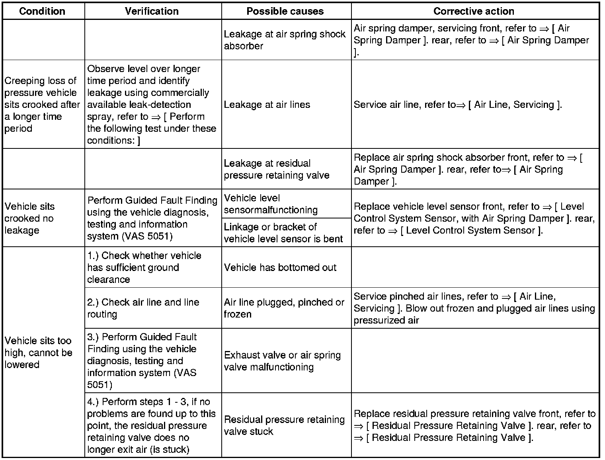
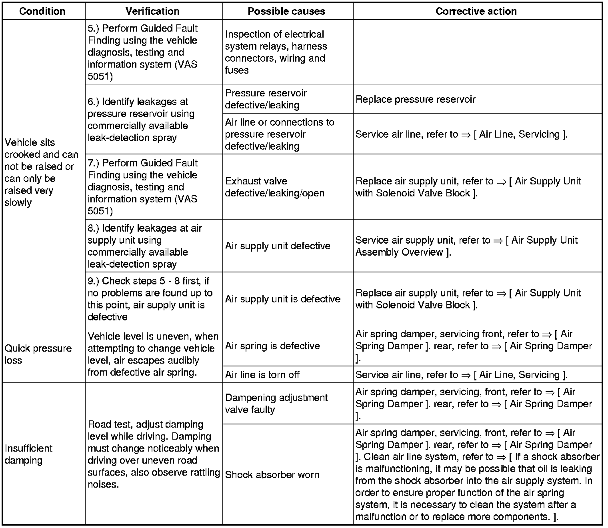

Air Spring Damper and Level Control System, Troubleshooting
Air Spring Damper and Level Control System, Troubleshooting


Perform the following test under these conditions:
• The vehicle must be cold and must not be moved during testing
• The room temperature should be between 10 - 30 C° and remain steady
• The vehicle must be sitting on a level surface
- Start the engine.
- Move vehicle with Front Information Display Control Head Control Module (J523) to high and then to normal level.
- Turn off engine.
- Disconnect connector from Level Control System Control Module (J197) to prevent level control from readjusting.
- Measure vehicle height on all four wheels.

- After 2 hours, measure again vehicle height and compare measurement - a - with first measurement.
If the vehicle is sitting crooked, a leakage is present at the suspension with the greatest difference between the first and second measurement.
- Check the affected air spring shock absorber and the corresponding air line using commercially available leak-detection spray in this order:
If no deviation is determined after 2 hours, the measurement must be repeated after 24 hours. After 24 hours, a deviation of up to 4 mm is permissible.
• Air line connections
• Residual Pressure Retaining Valve
• Check air spring shock absorber at front when installed, check at rear when removed.
If a shock absorber is malfunctioning, it may be possible that oil is leaking from the shock absorber into the air supply system. In order to ensure proper function of the air spring system, it is necessary to clean the system after a malfunction or to replace more components.
- Remove affected line from air spring shock absorber and solenoid valve block.
- Blow pressurized air through line several times, introduce pressurized air from line end of solenoid valve block.
- Check whether shock absorber oil has leaked into the solenoid valve block.
If shock absorber oil has leaked into the solenoid valve block, it must be replaced.
- Check internal line from air supply unit to solenoid valve block.
If oil is detected in internal line, air supply unit must be replaced.